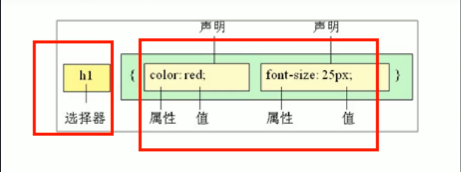
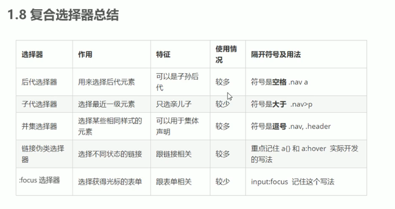
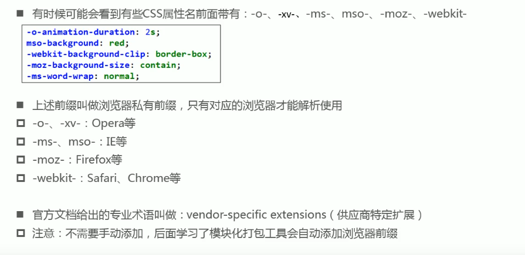

css(cascading style sheets)层叠样式表，层级高的会覆盖层级低的。 负责网页的表现即可以给网页的所有元素设置样式(宽高字体颜色大小背景颜色等等)，和html一样也是一门标记语言。
内联样式：直接在一个HTML元素的style属性上写，只对当前元素起作用。
语法：<p style="background-color:aqua;font-size:20px;属性名:属性值;">内联样式</p> ，属性名也是W3C给定好的。
文档样式表：在head标签中的使用style元素，在<style>样式 </style>标签中通过css选择器选中指定元素设置样式。
外部样式表：在head标签里使用link元素连接到外部的 .css文件，在.css文件中也是通过css选择器选中页面的元素。
或者在style元素里使用 @import url(路径); 来引入。
三者区别如下图所示：
我是通过HTML元素的style属性声明的样式
我是在head元素中使用style元素通过选择器声明的样式
我是在head元素中使用link元素引入外部.css文件的样式
css注释：/*这里是css的注释内容编写在style元素或 .css 文件中才有效*/
css代码都小写。
css选择器：选择器用来选中页面中的html文档元素(标签 )好设置它的样式。
语法：选择器名{声明块}

选择器名{
//样式声明块
样式名1:样式值;
样式名2:样式值;
.......
样式名n:样式值;
}
选择器名可以是：HTML元素的id属性值 = #idName，class属性值 = .className ，html元素的元素名等，
声明块：由一对花括号组成,里面是一组一组名值对结构的样式声明。
即：样式名1:样式值1;样式名2:样式值2;组成，
名值之间使用:分隔，名值对之间使用;分隔。
id选择器:通过HTML元素的id属性的属性值来选中页面中唯一对应的元素, 语法：#id属性值{//样式}
class选择器:通过HTML元素的class属性的属性值来选中页面中对应的一组元素, 语法：.class属性值{//样式}
我的类名和上面一样所以样式也一样
并集选择器：使用逗号隔开，即多个选择器的样式一样，语法：选择器1,选择器2,选择器3,...,选择器N{//1到N都会应用的样式}
交集选择器：连在一起，即选中页面中同时符合多个条件的元素，语法：选择器1选择器2选择器N{//样式}
通配符选择器：即选中页面中所有的元素，语法：*{//样式}
子选择器：大于号，即选中页面中某个父元素的子元素，语法：父选择器>自选择器{//样式}
后代选择器：空格，即选中页面中某个父元素的后代元素，语法：父选择器 子选择器{//样式}
属性选择器：即选中页面中某个元素的属性或属性值来选中元素， 语法：[属性名]{//样式} 或：选择器[属性名]{//样式} 或：选择器[属性名="属性值"]{//样式}
css特性：继承，层叠和优先级。 继承：后代元素会继承一部分样式属性但不是所有都能继承，如与背景有关的不会继承。自己有就用自己的，没有就继承父级元素的，且继承的是计算后的值。 层叠：样式是会层叠覆盖的，层级高的覆盖层级低的，相同层级后面书写的覆盖前面的。 优先级：!important 10000》内联 1000》id 100》类和伪类，属性选择器 10》元素和伪元素 1》通配符 0》继承的样式(没有优先级)
在编写css属性不生效时:可能是选择器优先级太低，也可能是没选中对应的元素，也可能该元素不支持这个属性。 善于使用浏览器的开发者工具调试查看。 有些css属性不是所有版本浏览器都支持的，但是加上前缀之后就可以使用了。 在打包时打包工具会自动添加的，添加了就可以适配更多的浏览器。  视口：浏览器能看到的窗口大小 viewport meta name="viewport" //name属性定义视口 content="width=device-width, //这个属性决定视口的大小 initial-scale=1.0" 初始化缩放的比例，一般写1即不进行缩放。